소방설비산업기사(기계) (2018-04-28 기출문제)
1과목: 소방원론
1. 소화약제로서의 물의 단점을 개선하기 위하여 사용하는 첨가제가 아닌 것은?
- 부동액
- 침투제
- 중점제
- 방식제
(정답률: 59%)

2. 방폭구조 중 전기불꽃이 발생하는 부분을 기름 속에 잠기게 함으로써 기름면 위 또는 용기 외부에 존재하는 가연성 증기에 착화할 우려가 없도록 한 구조는?
- 내압 방폭구조
- 안전증 방폭구조
- 유입 방폭구조
- 본질안전 방폭구조
(정답률: 73%)
3. 포 소화약제에 대한 설명으로 옳은 것은?
- 수성막포는 단백포 소화약제보다 유출유 화재에 소화성능이 떨어진다.
- 수용성 유류화재에는 알콜형포 소화약제가 적합하다.
- 알콜형포 소화약제의 주성분은 제2철염이다.
- 불화단백포는 단백포에 비하여 유동성이 떨어진다.
(정답률: 51%)
4. 자연발화에 대한 설명으로 틀린 것은?
- 외부로부터 열의 공급을 받지 않고 온도가 상승하는 현상이다.
- 물질의 온도가 발화점 이상이면 자연발화 한다.
- 다공질이고 열전도가 작은 물질일수록 자연발화가 일어나기 어렵다.
- 건성유가 묻어있는 기름걸레가 적층되어 있으면 자연발화가 일어나기 쉽다.
(정답률: 66%)
5. 가연물의 종류에 따른 화재의 분류로 틀린 것은?
- 일반화재：A급
- 유류화재：B급
- 전기화재：C급
- 주방화재：D급
(정답률: 89%)
6. 정전기 발생 방지대책 중 틀린 것은?
- 상대습도를 높인다.
- 공기를 이온화시킨다.
- 접지시설을 한다.
- 가능한 한 부도체를 사용한다.
(정답률: 76%)
7. 할로겐화합물 소화약제가 아닌 것은?
- CF3Br
- C2F4Br2
- CF2ClBr
- KHCO3
(정답률: 82%)
8. B급 화재에 해당하지 않는 것은?
- 목탄
- 등유
- 아세톤
- 이황화탄소
(정답률: 82%)
9. 일산화탄소에 관한 설명으로 틀린 것은?
- 일산화탄소의 증기비중은 약 0.97로 공기보다 약간 가볍다.
- 인체의 혈액 속에서 헤모글로빈(Hb)과 산소의 결합을 방해한다.
- 질식작용은 없다.
- 불완전연소시 주로 발생한다.
(정답률: 75%)
10. 자연발화의 발화원이 아닌 것은?
- 분해열
- 흡착열
- 발효열
- 기화열
(정답률: 67%)
11. 실내 화재 발생 시 순간적으로 실 전체로 화염이 확산되면서 온도가 급격히 상승하는 현상은?
- 제트 화이어(jet fire)
- 화이어 볼(fire ball)
- 플래시 오버(flash over)
- 리프트(lift)
(정답률: 81%)
12. 안전을 위해서 물속에 저장하는 물질은?
- 나트륨
- 칼륨
- 이황화탄소
- 과산화나트륨
(정답률: 71%)
13. 물이 소화약제로서 널리 사용되고 있는 이유에 대한 설명으로 틀린 것은?
- 다른 약제에 비해 쉽게 구할 수 있다.
- 비열이 크다.
- 증발잠열이 크다.
- 점도가 크다.
(정답률: 75%)
14. 화학적 점화원의 종류가 아닌 것은?
- 연소열
- 중합열
- 분해열
- 아크열
(정답률: 75%)
15. 물의 증발잠열은 약 몇 kcal/kg 인가?
- 439
- 539
- 639
- 739
(정답률: 83%)
16. 공기 1kg 중에 는 산소가 약 몇 mol이 들어 있는가? (단，산소, 질소 lmol의 분자량은 각각 32g, 28g이고, 공기 중 산소의 농도는 23wt%이다.)
- 5.65
- 6.53
- 7.19
- 7.91
(정답률: 50%)
17. 기름의 표면에 거품과 얇은 막을 형성하여 유류화재 진압에 뛰어난 소화효과를 갖는 포소화약제는?
- 수성막포
- 합성계면활성제포
- 단백포
- 알콜형포
(정답률: 74%)
18. 분해폭발을 일으키지 않는 물질은?
- 아세틸렌
- 프로판
- 산화질소
- 산화에틸렌
(정답률: 47%)
19. 오존파괴지수(ODP)가 가장 큰 것은?
- Halon 104
- CFC 11
- Halon 1301
- CFC 113
(정답률: 77%)
20. 칼륨이 물과 반응하면 위험한 이유는?
- 수소가 발생하기 때문에
- 산소가 발생하기 때문에
- 이산화탄소가 발생하기 때문에
- 아세틸렌이 발생하기 때문에
(정답률: 78%)
2과목: 소방유체역학
21. 물이 2m 깊이로 차 있는 개방된 직육면체 모양의 물탱크 바닥에 한 변이 20cm인 정사각형 판이 놓여 있다. 이 판의 윗면이 받는 힘은 약 몇 N인가? (단, 대기압은 무시한다.)
- 785
- 492
- 259
- 157
(정답률: 39%)
22. 유량이 0.75m3/min인 소화설비 배관의 안지름이 100mm일 때 배관 속을 흐르는 물의 평균 유속은 약 몇 m/s인가?
- 0.8
- 1.1
- 1.4
- 1.6
(정답률: 49%)
23. 한 변의 길이가 10cm인 정육면체의 금속 무게를 공기 중에서 달았더니 77N이었고, 어떤 액체 중에서 달아보니 70N이었다. 이 액체의 비중량은 몇 N/m3인가?
- 7700
- 7300
- 7000
- 6300
(정답률: 56%)
24. 관내에서 유체가 흐를 경우 유체의 흐름이 빨라 완전 난류 유동이 되면 손실 수두는?
- 대략 속도의 제곱에 비례한다.
- 대략 속도의 제곱에 반비례한다.
- 대략 속도에 비례한다.
- 대략 속도에 반비례한다.
(정답률: 62%)
25. 물 분류가 고정평판을 60°의 각도로 충돌할 때 유량이 500L/min, 유속이 15m/s이면 분류가 평판에 수직방향으로 미치는 힘은 약 몇 N 인가? (단，중력은 무시한다.)
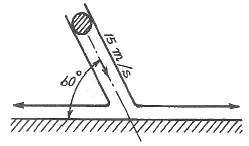
- 10.8
- 5.4
- 108
- 54
(정답률: 46%)
26. 동력(Power)과 같은 차원을 갖는 것은? (단, P는 압력, Q는 체적유량, V는 유체 속도를 나타낸다.)
- PV
- PQ
- VQ
- PQV
(정답률: 50%)
27. 공동현상(cavitation)의 방지법으로 적절하지 않은 것은?
- 단흡입펌프보다는 양흡입펌프를 사용한다.
- 펌프의 회전수를 낮추어 흡입 비속도를 적게 한다.
- 펌프의 설치 위치를 가능한 한 높여서 흡입양정을 크게 한다.
- 마찰저항이 작은 흡입관을 사용하여 흡입관의 손실을 줄인다.
(정답률: 65%)
28. 높이 40m의 저수조에서 15m의 저수조로 안지름 45cm, 길이 600m의 주철관을 통해 물이 흐르고 있다. 유량은 0.25m3/s이며, 관로 중의 터빈에서 29.4kW의 동력을 얻는다면 관로의 손실수두는 약 몇 m인가? (단，터빈의 효율은 100%이다.)
- 7
- 9
- 11
- 13
(정답률: 26%)
29. 어느 용기에 3g의 수소(H2)가 채워졌다. 만일 같은 압력 및 온도 조건 하에서 이 용기에 수소 대신 메탄(CH4 , 분자량 16)을 채운다면 이 용기에 채운 메탄의 질량은 몇 g인가?
- 10
- 24
- 34
- 40
(정답률: 57%)
30. 열려있는 탱크에 비중(S)이 2.5인 액체가 1.2m, 그 위에 물이 lm가 있다. 이 때 탱크의 바닥면에 작용하는 계기압력은 약 몇 kPa 인가?
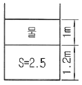
- 19.6
- 39.2
- 58.8
- 78.4
(정답률: 51%)
31. 분자량이 4이고 비열비가 1.67인 이상기체의 정압비열은 약 몇 kJ/(kmol·K)인가? (단, 이상기체의 일반기체상수는 8.314J/(mol·K)이다.)
- 3.10
- 4.72
- 5.18
- 6.75
(정답률: 37%)
32. 출구 지름이 1cm인 노즐이 달린 호스로 20L의 생수통에 물을 채운다. 생수통을 채우는 시간이 50초가 걸린다면，노즐 출구에서의 물의 평균 속도는 몇 m/s인가?
- 5.1
- 7.2
- 11.2
- 20.4
(정답률: 43%)
33. 비중이 0.75인 액체와 비중량이 6700N/m3인 액체를 부피 비 1：2로 혼합한 혼합액의 밀도는 약 몇 kg/m3 인가?
- 688
- 706
- 727
- 748
(정답률: 39%)
34. 유동손실을 유발하는 액체의 점성 즉，점도를 측정하는 장치에 관한 설명으로 옳은 것은?
- Stomer 점도계는 하겐-포아젤 법칙을 기초로 한 방식이다.
- 낙구식 점도계는 Stokes의 법칙을 이용한 방식이다.
- Saybolt 점도계는 액중에 잠긴 원판의 회전저항의 크기로 측정한다.
- Ostwald 점도계는 Stokes의 법칙을 이용한 방식이다.
(정답률: 54%)
35. 다음 중 대류 열전달과 관계되는 사항으로 가장 거리가 먼 것은?
- 팬(fan)을 이용해 컴퓨터 CPU의 열을 식힌다.
- 뜨거운 커피에 바람을 불어 식힌다.
- 에어컨은 높은 곳에 라디에이터는 낮은 곳에 설치한다.
- 판자를 화로 앞에 놓아 열을 차단한다.
(정답률: 59%)
36. 유동하는 물의 속도가 12m/s, 압력이 98kPa이다. 이 때 속도수두와 압력수두는 각각 얼마인가?
- 7.35m, 10m
- 43.5m, 10.5m
- 7.35m, 20.3m
- 0.66m, 10m
(정답률: 58%)
37. 절대압력이 101kPa인 상온의 공기가 가역단열변화를 할 때 체적탄성계수는 몇 kPa인가? (단，공기의 비열비는 1.4이다.)
- 72.1
- 92.3
- 118.8
- 141.4
(정답률: 40%)
38. 지름이 1.5m로 변하는 돌연 축소하는 관에 6m3/s의 유량으로 물이 흐르고 있다. 이 때 손실동력은 약 몇 kW인가? (단, 돌연 축소에 의한 부차적 손실계수 K는 0.3이다.)
- 6.8
- 7.4
- 9.1
- 10.4
(정답률: 31%)
39. 동력이 2kW인 펌프를 사용하여 수면의 높이 차이가 40m인 곳으로 물을 끌어 올리려고 한다. 관로 전체의 손실수두가 10m라고 할 때 펌프의 유량은 약 몇 m3/s인가? (단，펌프의 효율은 90%이다.)
- 0.00294
- 0.00367
- 0.00408
- 0.00453
(정답률: 46%)
40. 펌프는 흡입 수면으로부터 송출되는 높이까지 물을 송출시키는 기계로서 흡입수면과 송출수면 사이의 높이를 실양정이라고 한다. 이 실양정을 세분화할 때 펌프로부터 송출수면까지의 높이를 무엇이라고 하는가? (단, 흡입수면과 송출수면은 대기에 노출된다고 가정한다.)
- 유효실양정
- 무효실양정
- 송출실양정
- 흡입실양정
(정답률: 50%)
3과목: 소방관계법규
41. 화재예방, 소방시설 설치·유지 및 안전관리에 관한 법령상 둘 이상의 특정소방대상물이 내화구조로 된 연결통로가 벽이 없는 구조로서 그 길이가 몇 m 이하인 경우 하나의 소방대상물로 보는가?
- 6
- 9
- 10
- 12
(정답률: 51%)
42. 화재예방, 소방시설 설치·유지 및 안전관리에 관한 법령상 수용인원 산정 방법 중 다음의 청소년시설의 수용인원은 몇 명인가?
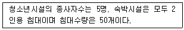
- 55
- 75
- 85
- 1⑤
(정답률: 75%)
43. 화재예방，소방시설 설치·유지 및 안전관리에 관한 법령상 근무자 및 거주자에게 소방훈련·교육을 실시하여야 하는 특정소방대상물의 기준 중 다음 ( ) 안에 알맞은 것은?
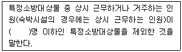
- 3
- 5
- 7
- 10
(정답률: 63%)
44. 소방시설공사업법령상 감리원의 세부 배치 기준 중 일반 공사감리 대상인 경우 다음 ( ) 안에 알맞은 것은? (단，일반 공사감리 대상인 아파트의 경우는 제외한다.)
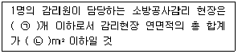
- ㉠ 5, ㉡ 50000
- ㉠ 5, ㉡ 100000
- ㉠ 7, ㉡ 50000
- ㉠ 7, ㉡ 100000
(정답률: 55%)
45. 화재예방 소방시설 설치, 유지 및 안전관리에 관한 법령상 단독경보형 감지기를 설치하여야 하는 특정소방대상물의 기준 중 틀린 것은?
- 연면적 600m2 미만의 기숙사
- 연면적 600m2 미만의 숙박시설
- 연면적 1000m2 미만의 아파트등
- 교육연구시설 또는 수련시설 내에 있는 합숙소 또는 기숙사로서 연면적 2000m2 미만인 것
(정답률: 44%)
46. 화재예방, 소방시설 설치·유지 및 안전관리에 관한 법령상 특정소방대상물의 관계인이 특정 소방대상물의 규모·용도 및 수용인원 등을 고려하여 갖추어야 하는 소방시설의 종류 기준 중 다음 ( ) 안에 알맞은 것은?
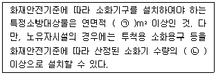
- ㉠ 33, ㉡ 1/2
- ㉠ 33, ㉡1/5
- ㉠ 50, ㉡1/2
- ㉠ 50, ㉡1/5
(정답률: 69%)
47. 화재예방，소방시설 설치·유지 및 안전관리에 관한 법령상 소방시설등의 자체점검 시 점검 인력 배치기준 중 점검인력 1단위가 하루 동안 점검할 수 있는 특정소방대상물의 종합정밀점검 연면적 기준으로 옳은 것은? (단, 보조인력을 추가하는 경우를 제외한다.)
- 3500m2
- 7000m2
- 10000m2
- 12000m2
(정답률: 64%)
48. 소방기본법령상 소방용수시설 및 지리조사의 기준 중 다음 ( ) 안에 알맞은 것은?
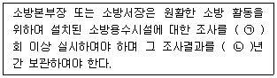
- ㉠ 월 1，㉡ 1
- ㉠ 월 1，㉡ 2
- ㉠ 년 1, ㉡ 1
- ㉠ 년 1, ㉡ 2
(정답률: 68%)
49. 소방기본법상 명령권자가 소방본부장，소방서장, 소방대장에게 있는 사항은?
- 소방활동을 할 때에 긴급한 경우에는 이웃한 소방본부장 또는 소방서장에게 소방업무의 응원 요청할 수 있다.
- 화재, 재난·재해, 그 밖의 위급한 상황이 발생한 현장에서 소방활동을 위하여 필요할 때에는 그 관할구역에 사는 사람 또는 그 현장에 있는 사람으로 하여금 사람을 구출하는 일 또는 불을 끄거나 불이 번지지 아니하도록 하는 일을 하게 할 수 있다.
- 수사기관이 방화 또는 실화의 혐의가 있어서 이미 피의자를 체포하였거나 증거물을 압수하였을 때에 화재조사를 위하여 필요한 경우에는 수사에 지장을 주지 아니하는 범위에서 그 피의자 또는 압수된 증거물에 대한 조사를 할 수 있다.
- 화재, 재난·재해, 그 밖의 위급한 상황이 발생하였을 때에는 소방대를 현장에 신속하게 출동시켜 화재진압과 인명구조·구급 등 소방에 필요한 활동을 하게 하여야 한다.
(정답률: 49%)
50. 소방기본법령상 특수가연물의 저장 기준 중 다음 ( ) 안에 알맞은 것은? (단, 석탄·목탄류를 발전용으로 저장하는 경우는 제외한다.)
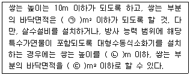
- ㉠ 20, ㉡ 50, ㉢ 100
- ㉠ 15, ㉡ 50, ㉢ 200
- ㉠ 50, ㉡ 20, ㉢ 100
- ㉠ 50, ㉡ 15, ㉢ 200
(정답률: 56%)
51. 소방시설공사업법상 제3자에게 소방시설공사 시공을 하도급한 자에 대한 벌칙 기준으로 옳은 것은? (단, 대통령령으로 정하는 경우는 제외한다.)
- 100만원 이하의 벌금
- 300만원 이하의 벌금
- 1년 이하의 징역 또는 1000만원 이하의 벌금
- 3년 이하의 징역 또는 1500만원 이하의 벌금
(정답률: 57%)
52. 소방기본법령상 인접하고 있는 시·도간 소방 업무의 상호응원협정을 체결하고자 하는 때에 포함되도록 하여야 하는 사항이 아닌 것은?
- 소방교육·훈련의 종류 및 대상자에 관한 사항
- 화재의 경계·진압활동에 관한 사항
- 출동대원의 수당·식가 및 피복의 수선 소요경비의 부담에 관한 사항
- 화재조사활동에 관한 사항
(정답률: 43%)
53. 위험물안전관리법상 허가를 받지 아니하고 당해 제조소등을 설치하거나 그 위치·구조 또는 설비를 변경할 수 있으며, 신고를 하지 아니하고 위험물의 품명·수량 또는 지정수량의 배수를 변경할 수 있는 기준으로 틀린 것은?
- 주택의 난방시설을 위한 저장소 또는 취급소
- 공통주택의 중앙난방시설을 위한 저장소 또는 취급소
- 수산용으로 필요한 건조시설을 위한 지정수량 20배 이하의 저장소
- 농예용으로 필요한 난방시설을 위한 지정수량 20배 이하의 저장소
(정답률: 60%)
54. 소방기본법령상 소방본부장 또는 소방서장은 화재경계지구 안의 관계인에 대하여 소방상 필요한 훈련 및 교육을 실시하고자 하는 때에는 관계인에게 훈련 또는 교육 며칠 전까지 그 사실을 통보하여야 하는가?
- 5
- 7
- 10
- 14
(정답률: 52%)
55. 위험물안전관리법령상 제조소등이 아닌 장소에서 지정수량 이상의 위험물을 취급할 수 있는 기준 중 다음 ( ) 안에 알맞은 것은?
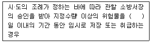
- 15
- 30
- 60
- 90
(정답률: 64%)
56. 소방특별조사 결과 소방대상물의 위치·구조·설비 또는 관리의 상황이 화재나 재난·재해예방을 위하여 보완될 필요가 있거나 화재가 발생하면 인명 또는 재산의 피해가 클 것으로 예상되는 때 관계인에게 그 소방대상물의 개수·이전·제거, 사용의 금지 또는 제한, 사용폐쇄，공사의 정지 또는 중지, 그 밖의 필요할 조치를 명할 수 있는 자가 아닌 것은?
- 소방서장
- 소방본부장
- 소방청장
- 시·도지사
(정답률: 61%)
57. 위험물안전관리법령상 제조소 또는 일반 취급소의 위험물취급탱크 노즐 또는 맨홀을 신설 시 노즐 또는 맨홀의 직경이 몇 mm 를 초과하는 경우에 변경허가를 받아야 하는가?
- 250
- 300
- 450
- 600
(정답률: 50%)
58. 위험물안전관리법령상 인화성액체위험물(이황화탄소를 제외)의 옥외탱크저장소의 탱크주위에 설치하여야 하는 방유제의 기준 중 틀린 것은?
- 방유제의, 용량은 방유제안에 설치된 탱크가 하나인 때에는 그 탱크 용량의 110% 이상으로 할 것
- 방유제의 용량은 방유제안에 설치된 탱크가 2기 이상인 때에는 그 탱크 중 용량이 최대인 것의 용량의 110% 이상으로 할 것
- 방유제의 높이는 1m 이상 3m 이하, 두께 0.2m 이상, 지하매설깊이 0.5m 이상으로 할 것
- 방유제내의 면적은 80000m2 이하로 할 것
(정답률: 63%)
59. 소방기본법상 화재경계지구 안의 소방대상물에 대한 소방특별조사를 거부·방해 또는 기피한 자에 대한 벌칙 기준으로 옳은 것은?
- 400만원 이하의 벌금
- 300만원 이하의 벌금
- 200만원 이하의 벌금
- 100만원 이하의 벌금
(정답률: 36%)
60. 화재예방, 소방시설 설치·유지 및 안전관리에 관한 법령상 방염성능기준 이상의 실내장식물 등을 설치하여야 하는 특정소방대상물의 기준으로 틀린 것은?
- 층수가 11층 이상인 아파트
- 건축물의 옥내에 있는 시설로서 종교시설
- 의료시설 중 종합병원
- 노유자시설
(정답률: 72%)
4과목: 소방기계시설의 구조 및 원리
61. 스프링클러설비의 종류 중 폐쇄형스프링클러 헤드를 사용하는 방식이 아닌 것은?
- 습식
- 건식
- 준비작동식
- 일제살수식
(정답률: 72%)
62. 특정소방대상물별 소화기구의 능력단위기준 중 노유자시설 소화기구의 능력단위 기준으로 옳은 것은? (단，건축물의 주요구조부，벽 및 반자의 실내에 면하는 부분에 대한 조건은 무시한다.)
- 해당 용도의 바닥면적 200m2 마다 능력단위 1단위 이상
- 해당 용도의 바닥면적 100m2 마다 능력단위 1단위 이상
- 해당 용도의 바닥면적 50m2 마다 능력단위 1단위 이상
- 해당 용도의 바닥면적 30m2 마다 능력단위 1단위 이상
(정답률: 57%)
63. 물분무소화설비 송수구의 설치기준 중 다음 ( ) 안에 알맞은 것은?
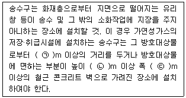
- ㉠ 20, ㉡ 1.5, ㉢ 2.5
- ㉠ 20, ㉡ 0.5, ㉢ 1
- ㉠ 10, ㉡ 0.8, ㉢ 1.5
- ㉠ 10, ㉡ 1, ㉢ 2
(정답률: 56%)
64. 고정포방출구의 구분 중 다음에서 설명하는 것은?
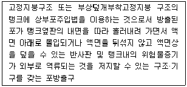
- I형
- II형
- III형
- 특형
(정답률: 56%)
65. 습식스프링클러설비 또는 부압식 스프링클러 설비 외의 설비에는 헤드를 향하여 상향으로 수평주행배관 기울기를 몇 이상으로 하여야 하는가? (단，배관의 구조상 기울기를 줄 수 없는 경우는 제외한다.)
- 1/100
- 1/200
- 1/300
- 1/500
(정답률: 67%)
66. 피난기구 중 완강기의 구조에 대한 기준으로 틀린 것은?
- 완강기는 안전하고 쉽게 사용할 수 있어야 하며, 사용자가 타인의 도움 없이 자기의 몸무게에 의하여 자동적으로 강하할 수 있어야 한다.
- 로우프의 양끝은 이탈되지 아니하도록 벨트의 연결장치 등에 연결되어야 한다.
- 벨트는 로우프에 고정되어 있거나 또는 분리식인 경우 쉽고 견고하게 로우프에 연결할 수 있는 구조이어야 한다.
- 로프·속도조절기구·벨트 및 고정 지지대 등으로 구성되어야 한다.
(정답률: 57%)
67. 이산화탄소 소화약제 저장용기의 설치기준으로 옳은 것은?
- 저장용기의 충전비는 고압식은 1.1 이상 1.5 이하，저압식은 0.64 이상 0.8 이하로 할 것
- 저압식 저장용기에는 액면계 및 압력계와 1.5MPa 이상 1.9 MPa 이하의 압력에서 작동하는 압력경보장치를 설치할 것
- 저장용기는 고압식은 25MPa 이상, 저압식은 3.5MPa 이상의 내압시험압력에 합격한 것으로 할 것
- 저압식 저장용기에는 용기내부의 온도가 섭씨 영하 21℃이하에서 1.8MPa의 압력을 유지할 수 있는 자동냉동장치를 설치할 것
(정답률: 51%)
68. 분말소화약제 1kg 당 저장용기의 내용적이 가장 작은 것은?
- 제1종 분말
- 제2종 분말
- 제3종 분말
- 제4종 분말
(정답률: 65%)
69. 연결살수설비 배관 구경의 설치기준 중 하나의 배관에 부착하는 살수헤드의 개수가 3개인 경우 배관의 최소 구경은 몇 mm 이상이어야 하는가?
- 40
- 50
- 65
- 80
(정답률: 47%)
70. 포헤드를 정방형으로 배치한 경우 포헤드 상호간 거리 산정식으로 옳은 것은? (단, r은 유효반경이며 S는 포헤드 상호간의 거리이다.)
- S＝2r×sin30°
- S＝2r×cos30°
- S＝2r
- S＝2r×cos45°
(정답률: 67%)
71. 옥외소화전설비 소화전함의 설치기준 중 다음 ( ) 안에 알맞은 것은?
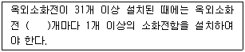
- 3
- 5
- 7
- 11
(정답률: 58%)
72. 할로겐화합물 소화설비 자동식 기동장치의 설치기준 중 다음 ( ) 안에 알맞은 것은?
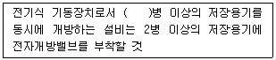
- 3
- 5
- 7
- 10
(정답률: 53%)
73. 화재조기진압용 스프링클러설비를 설치할 장소의 구조 기준으로 틀린 것은?
- 해당층의 높이가 13.7m 이하일 것. 다만，2층 이상일 경우에는 해당층의 바닥을 내화구조로 하고 다른 부분과 방화구획 할 것
- 천장의 기울기가 168/1000 을 초과하지 않아야 하고，이를 초과하는 경우에는 반자를 지면과 수평으로 설치할 것
- 천장은 평평하여야 하며 철재나 목재트러스 구조인 경우, 철재나 목재의 돌출부분이 102mm를 초과하지 아니 할 것
- 창고내의 선반의 형태는 하부로 물이 침투되지 않는 구조로 할 것
(정답률: 53%)
74. 소화기의 정의 중 다음 ( ) 안에 알맞은 것은?
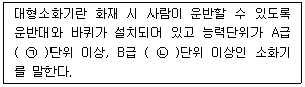
- ㉠ 3, ㉡ 5
- ㉠ 5, ㉡ 3
- ㉠ 10, ㉡ 20
- ㉠ 20, ㉡ 10
(정답률: 75%)
75. 호스릴분말소화설비의 설치기준 중 틀린 것은?
- 방호대상물의 각 부분으로부터 하나의 호스접결구까지의 수평거리가 15m 이하가 되도록 할 것
- 소화약제의 저장용기는 호스릴을 설치하는 장소마다 설치할 것
- 소화약제의 저장용기의 개방밸브는 호스릴의 설치장소에서 자동으로 개폐할 수 있는 것으로 할 것
- 저장용기에는 그 가까운 곳의 보기 쉬운 곳에 적색의 표시등을 설치하고, 이동식 분말소화설비가 있다는 뜻을 표시한 표지를 할 것
(정답률: 59%)
76. 하나의 옥내소화전을 사용하는 노즐선단에서의 방수압력이 0.7MPa를 초과할 경우에 감압장치를 설치하여야 하는 곳은?
- 방수구 연결배관
- 호스접결구의 인입 측
- 노즐선단
- 노즐안쪽
(정답률: 57%)
77. 연결살수설비의 가지배관은 교차배관 또는 주배관에서 분기되는 지점을 기점으로 한 쪽 가지배관에 설치되는 헤드의 개수는 최대 몇 개 이하로 하여야 하는가?
- 8개
- 10개
- 12개
- 15개
(정답률: 59%)
78. 특정소방대상물의 용도 및 장소별로 설치하여야 할 인명구조기구의 기준으로 틀린 것은?
- 지하층을 포함하는 층수가 7층 이상인 관광호텔은 방열복 또는 방화복, 공기호흡기를 각 2개 이상 비치할 것
- 문화 및 집회시설 중 수용인원 100명 이상의 영화상영관은 공기호흡기를 층마다 2개 이상 비치할 것
- 지하가 중 지하상가는 공기호흡기를 층마다 2개 이상 비치할 것
- 물분무등소화설비 중 이산화탄소 소화설비를 설치하여야 하는 특정소방대상물은 공기 호흡기를 이산화탄소 소화설비가 설치된 장소의 출입구 외부 인근에 1대 이상 비치할 것
(정답률: 43%)
79. 미분무소화설비의 화재안전기준에 따른 용어의 정리 중 다음 ( ) 안에 알맞은 것은?
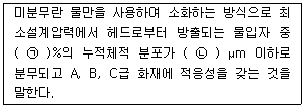
- ㉠ 30, ㉡ 200
- ㉠ 50, ㉡ 200
- ㉠ 60, ㉡ 400
- ㉠ 99, ㉡ 400
(정답률: 66%)
80. 소화수조 또는 저수조가 지표면으로부터 깊이가 4.5m 이상인 지하에 있는 경우 설치하여야 하는 가압송수장치의 1분당 최소 양수량은 몇 L 인가? (단, 소요수량은 80m3이다.)
- 1100
- 2200
- 3300
- 4400
(정답률: 50%)